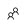
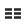
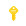
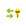

Installing Azure AD Connect
Objective
We are now finally ready to begin the configuration of our synchronization process. Upon completion of this step, your virtual datacenter will be sync'ing with Azure AD.
Install Azure AD Connect
To have our local domain synchronize with Azure AD we need Azure AD Connect. We will install it on the ad-connect virtual machine.
-
As you have previously connected to the ad-connect and utility VMs already, let's RDP to the ad-connect machine once more.
-
Once you've successfully connect to ad-connect, you will need to download and install the Azure AD Connect tool. You can download it from https://www.microsoft.com/en-us/download/details.aspx?id=47594.
-
Upon installing Azure AD Connect, it will automatically run.
-
Check the box agreeing to the license terms and click Continue.
-
For the moment, Express Settings are sufficient. We'll customize it later. So, go ahead and click Use express settings.
-
Once the basic initialization has completed, you will be asked for your Azure AD credentials. Enter the credentials you use for authenticating against Azure for your trial subscription (e.g. <yourusername>@<yourcompany>.onmicrosoft.com). Click Next.
-
For connecting to AD DS, use the cloudadmin credentials provided to you by the CLI (you've also used these credentials for connecting remotely into the VMs).
-
The next screen confirms mapping between the local UPN and a verified domain in Azure AD. Since we don't have a verified domain in Azure - we're just using the default *.onmicrosoft.com - all local accounts will be "re-mapped" to the onmicrosoft.com domain. For our workshop, we can simply check the box next to Continue without any verified domains and click Next.
-
BEFORE YOU CLICK Install, uncheck the box next to Start the synchronization process when configuration completes. Otherwise, all accounts (including system accounts) will be synchronized creating a lot of bloat in our Azure AD. We're going to create some filters before we conduct our first sync.
-
Now, you're ready to complete the install for Azure AD Connect. Click Install.
After a few minutes, you should receive confirmation that the configuration has completed. It may also give you a couple of house-keeping recommendations. Go ahead and click Exit to exit the installer.
Configure Synchronization Filters
We need to create some filters to only synchronize our users who's UPNs have been updated to the "new" domain.
In order to do this, we need to create what's called a "Positive Filter." Basically, we're instructing AD Connect to "only sync these." Keep in mind that, by default AD Connect will sync all users in our domain (or OU, depending how we have configured the sync scope). So, in order to create a positive filter, we need to create two rules - one that specifies which users to sync; and, another that instructs AD Connect to not sync all of the remaining users.
Both of our rules are considered Incoming Sync Rules (ISR) because they are determining what data we are allowing into the metaverse from our local Active Directory.
First, let's begin by opening up the synchronization rules. In the Start Menu of the ad-connect VM, click on Sychronization Rules Editor. You'll see approximately 15-20 default rules. We're going to add our two rules to the top in order for our rules to take precedence.
Users Match Filter
This filter will instruct which users we do want to sync with Azure AD.
-
In the Synchronization Rules Editor click on Add new rule.
-
Description:
- Name: UPN Demo - Users Match Filter
- Description: Only sync users who match our onmicrosoft.com UPN
- Connected System: choose your .local domain
- CS Object Type: user
- Metaverse Object Type: person
- Link Type: Join
- Precedence: 50
- Enable Password Sync: check
-
Scoping filter:
- Click Add group
- Click Add clause
- In the clause, enter the following values for each column, respectively:
- Attribute: userPrincipalName
- Operator: ENDSWITH
- Value: <yourcompany>.onmicrosoft.com
-
Join rules: leave blank
-
Transformations:
- Click Add transformation
- In the transformation, enter the following values for each column, respectively:
- FlowType: Constant
- Target Attribute: cloudFiltered
- Source: False
-
Click Save.
Users Catch-All Filter
This filter will instruct which users we do not want to sync with Azure AD.
-
In the Synchronization Rules Editor click on Add new rule.
-
Description:
- Name: UPN Demo - Users Catch-All Filter
- Description: Catch and filter out all other users who do not have the onmicrosoft.com domain.
- Connected System: choose your .local domain
- CS Object Type: user
- Metaverse Object Type: person
- Link Type: Join
- Precedence: 99
-
Scoping filter: leave blank
-
Join rules: leave blank
-
Transformations:
- Click Add transformation
- In the transformation, enter the following values for each column, respectively:
- FlowType: Constant
- Target Attribute: cloudFiltered
- Source: True
-
Click Save.
Before you close the Syncrhonization Rules Editor, notice that at the bottom of the window, you are able export rules to a PowerShell script. For any custom rules, this should be part of your disaster recovery plan in case the AD Connect synchronization server fails. You may now close the editor.
Enable Password Writeback
One last thing we want to do is configure the Azure AD Connect tool to writeback password changes to our local Active Directory. Additionally, remember that, during installation, we elected to not start the synchronization service. So, we going to do that, as well.
-
On the desktop of your ad-connect VM, you should see a new icon for Azure AD Connect. Go ahead and open the tool.
-
Immediately, you'll notice that while the connect tool is open, the service is suspended.
-
Click Configure.
-
Select Customize synchronization options and click Next.
-
Type in your credentials for Azure and click Next.
-
Type in your credentials for the local Active Directory and click Next.
-
In the Domain and OU Filtering, we only want to sync our Users group. This will keep Azure AD nice and tidy. So:
- Select Sync selected domains and OUs.
- Expand the local domain and uncheck all OUs except Users.
- Click Next.
-
Check both Password synchronization and Password writeback. Click Next.
-
BEFORE YOU CLICK Configure, check the box next to Start the synchronization process when configuration completes. This time, we want the synchronization service to begin sync'ing our users.
-
Click Configure.
-
Once the configuration has completed, you should receive a confirmation. Click Exit.
Confirming a Successful Synchronization
Give the synchronization service a minute to "spin up" and conduct its first sync. Then, let's head over to our Azure portal to confirm that the synchronization was successful. Once you've reached your Azure portal, perform the following steps.
-
On the left menu, click on Azure Active Directory
 .
. -
In the Azure Active Directory blade, click on Users and groups .
-
In the Users and groups blade, click on All users .
We should now see all 3 users from our local Active Directory listed here. Question... If our Azure AD grows to a huge list of users, how will we know which users originated in the cloud and which ones are sync'ed from our on-premises Active Directory?
While we are still on the same blade (viewing our users list), do the following:
-
In the Actions section, click on Columns .
-
Check the box next to Source of authority.
-
Click Apply.
We now see from where our users are originating, whether that on-premises (e.g. Windows Server AD) or the cloud (e.g. Azure Active Directory).
Remember that any changes made to synchronized users (e.g. Windows Server AD) are replicated back down to our local Active Directory. However cloud users are not synchronized.
Completing Password Writeback
In completing the Azure AD Connect configuration, we enabled password writeback. But, by default, users aren't able to update their passwords in Azure. We need to enable users to have the ability to update their passwords.
-
While you are still on the Users and groups blade, click on Password reset .
-
You will see here that self-service password is not enabled for anyone. Click on All and then click Save.
-
Finally, let's confirm that password writebacks are enabled in Azure. Click on On-premises integration .
-
From here, you will see that password writebacks are, indeed, enabled along with restricting users from unlocking their accounts without resetting their passwords.
You now have our local Active Directory sync'ing with our Azure AD.
Additional Notes
Interestingly enough, if you log out of Azure and attempt to login with one of the UPNs that was sync'ed (for example, jim.smith@<yourcompany>.onmicrosoft.com with the default password Pass@word1234), Azure will require you to set up a secondary authentication method - phone or email - prior to being able to login.
Also, if you login to your Office 365 trial tenant, you'll see the users from your on-premises Active Directory listed. All you would need to do at this point is assign them licenses.